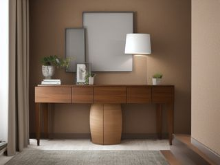
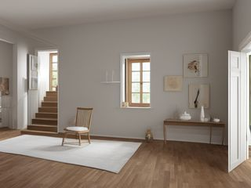
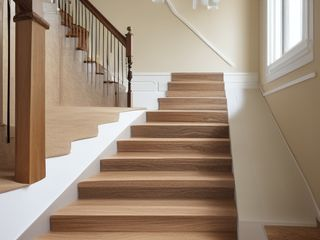

Room
Stair Landing: belongs to nobody, which is exactly why a small oversight here can hurt someone
The stair landing belongs to nobody, which is exactly why things end up there. It is also the one route in the house where a small oversight, a book left on a tread or a bulb nobody replaced, turns into a real injury. Start with the stairs themselves, because once the treads are bare and both ends are lit, the console and the picture wall go quickly.
Also called the stairway landing. Same room, same micro zones.
The 3 micro zones
A micro zone is one session, not a whole day. Finish one before you start the next.
Added together, the 3 sessions below come to about 1.5 to 2 hours for the whole stair landing. That is not one long day. Each session finishes on its own, so stopping after the first still leaves the room better than it was.
Start here. Do the Stair and Floor Path zone first, even though it looks like the least cluttered of the three. Clearing the treads and sorting the lighting sets the limit on what the console and the wall are allowed to hold.
The micro zones of this room
Stair Landing
3 zones. Finish one before you start the next.
- 1The Landing Surface or Console15-30 min
- 2The Wall and Display Zone30-45 min
- 3The Stair and Floor Path30-45 min

The Landing Surface or Console (15-30 min)
A small surface beside the stairs that holds a lamp and a landing spot, without becoming the house's holding pen for things headed to another floor.
The Wall and Display Zone (30-45 min)
The frames, mirror and any sconces on the stairway wall, hung so they stay put and never crowd the shoulder of someone climbing with their arms full.
The Stair and Floor Path (30-45 min)
The treads, runner, handrail and lighting that carry every person in the house between floors, several times a day, often with their arms full.
Illustrations of each zone finished. Not photographs of real homes.
The kit for the whole stair landing
Every zone below draws from this. These are types of thing, not brands, and anything you already own that does the job is the right one to use. Each zone page names the smaller list that zone actually needs.
- Streak-free glass and mirror cleaner Clean glass, mirrors, and polished surfaces, in the Shine and Sustain passes. Do not spray electronics directly.
- Color-coded microfiber cloth set ×12 Wipe, dust, and dry surfaces, in the Shine pass. Wash by use color; avoid fabric softener.
- Neutral pH multi-surface cleaner Routine cleaning of sealed surfaces, in the Shine and Sustain passes. Verify surface compatibility; lock around children and pets.
- Compact vacuum with attachments Remove dust, crumbs, and debris, in the Shine pass. Use appropriate attachment.
- Keep, Relocate, Donate, Recycle, Trash container set ×5 Support rapid item routing during Sort, in the Sort pass. Do not block exits.
- Portable cleaning caddy Transport and contain cleaning inputs, in the Straighten, Shine and Sustain passes. Secure chemicals from children and pets.
- Portable label maker Create durable standardized labels, in the Standardize and Sustain passes. Follow surface and adhesive guidance.
- Removable write-on labels Create temporary or adjustable visual controls, in the Standardize pass. Test on delicate finishes.
For this room
- Cleaning note. The handrail is one of the most touched and least washed surfaces in the house, so wipe it end to end each week, underside included. Then vacuum the crevice where each tread meets its riser and where a runner tucks against the side stringer, because that trapped grit is what wears a runner smooth and slick.
- The trap. The trap is the reasonable sentence "I'll take it up next time I go." It is how a landing console fills and how the bottom three steps become a shelf. One basket, emptied every night, is the only version of that promise that survives a busy week.
The stair landing deck
The same zones as a deck of 40 cards you can read here or print: what each zone is for, the frictions people actually report in it, the root cause behind each one, and the timed action that clears it. Free, no account. Read the stair landing deck.
When you want it off the screen
The whole Stair Landing on cards you can carry
Everything above is free and stays free. The Stair Landing Pack puts these 3 micro zones on 18 printable cards, nine to a page, plus the standards sheet for the room. It is for the part where you are stood in here with wet hands and would rather not be holding a phone.
The Stair Landing Pack, 9 dollarsOr all twenty rooms, 19 dollarsOr draw a card free
The Stair Landing on its own is 9 dollars for 18 cards. All 114 micro zones is 19 dollars for 684, which is more cards for the money by a wide margin. The room pack is here because you came for the stair landing, not for the house.
Or have somebody run it with you. A one hour virtual consult is 250 dollars: we work out what the stair landing is supposed to do, what is stopping it and which zone to start on, and you keep a written plan.
See what a consult covers, 250 dollars
Not ready to pay for that either? Ask which zone first, free
The other rooms
The same six passes, room by room. Every one of these is broken into its own micro zones.
All 20 rooms and 114 micro zones on one page